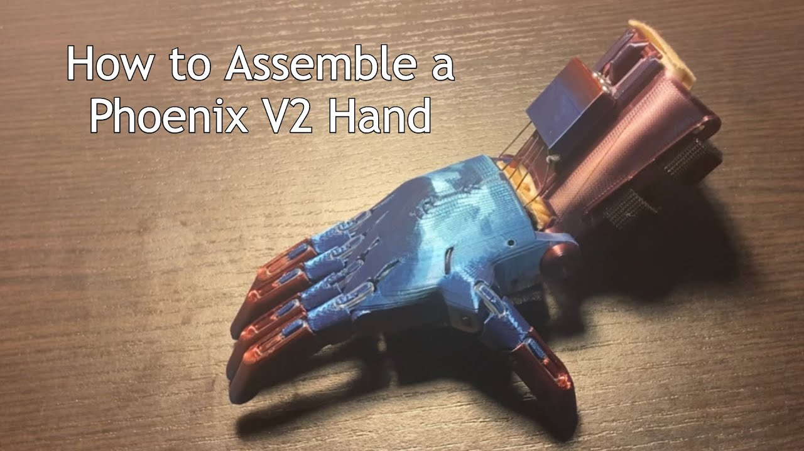
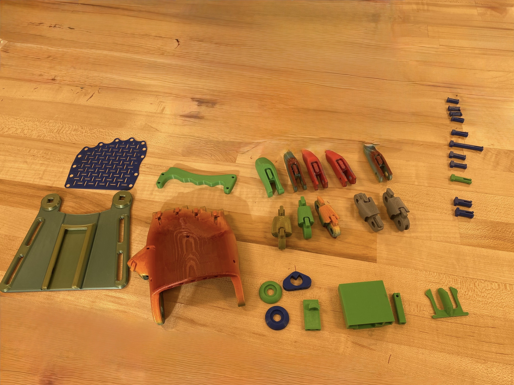
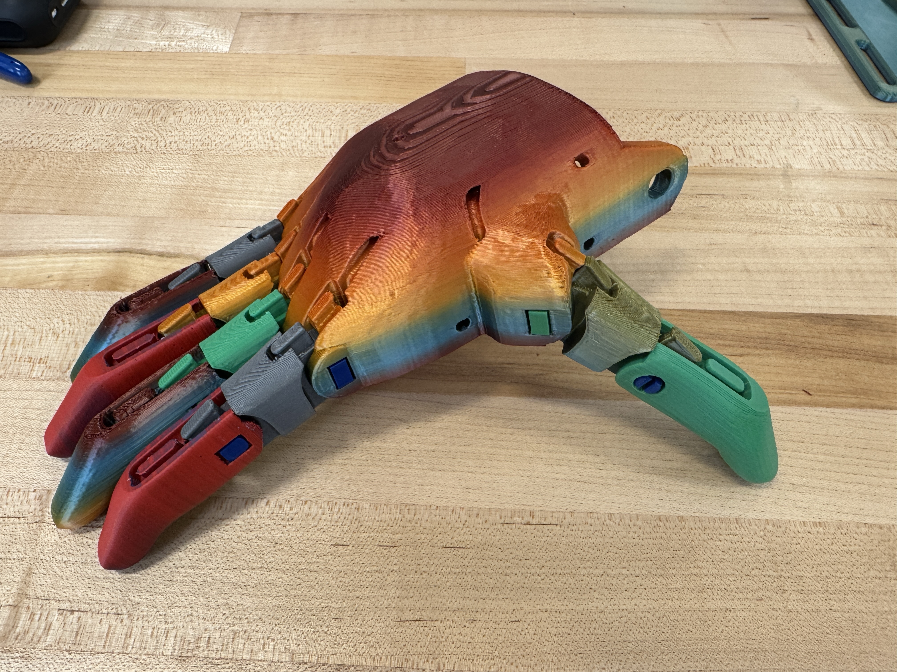
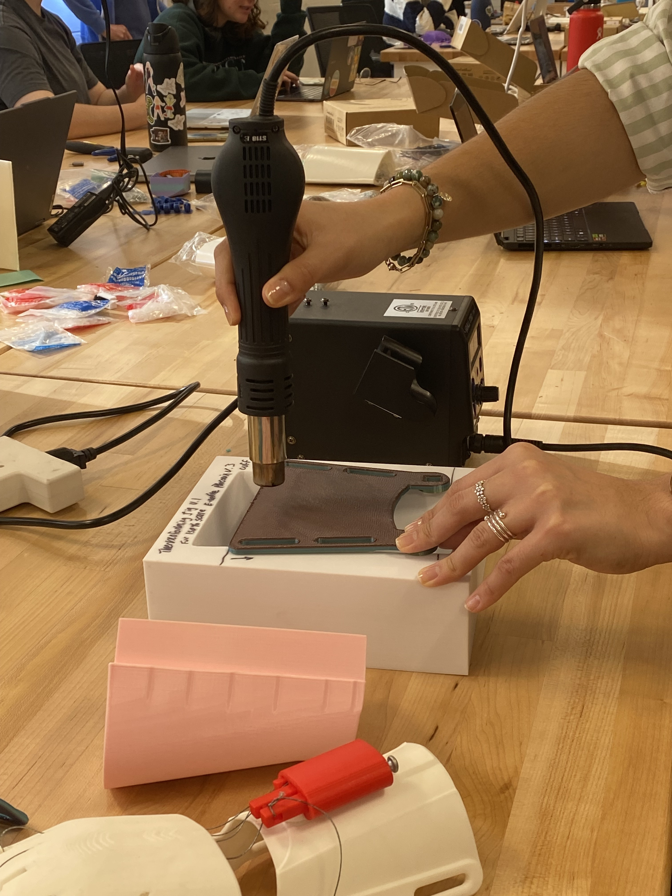
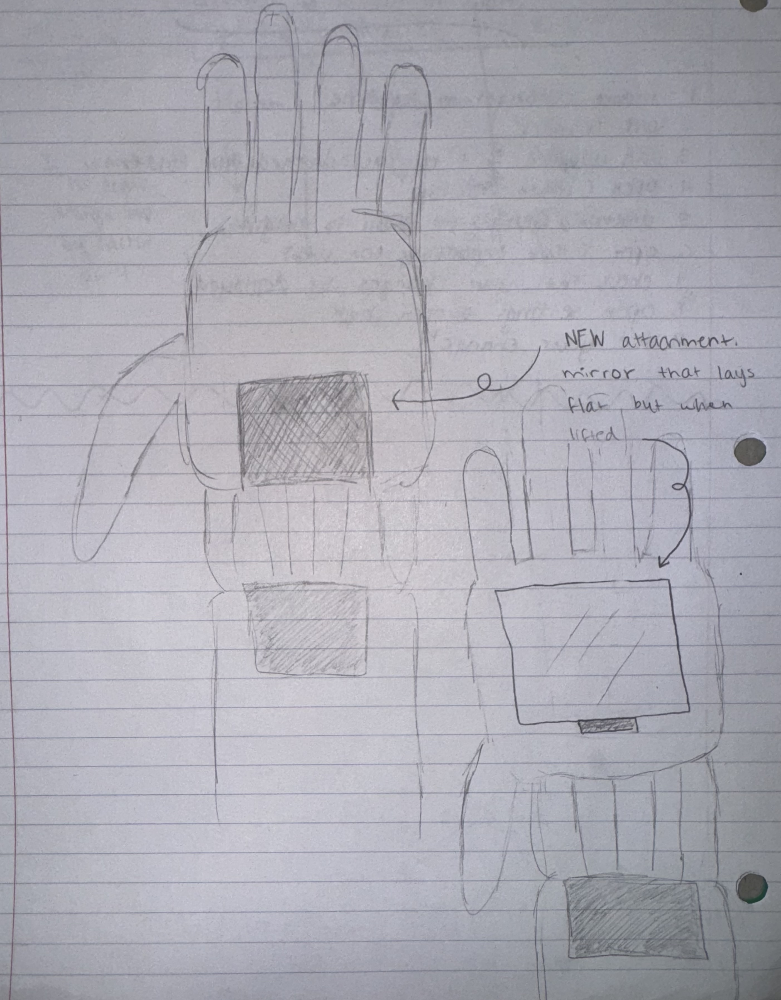
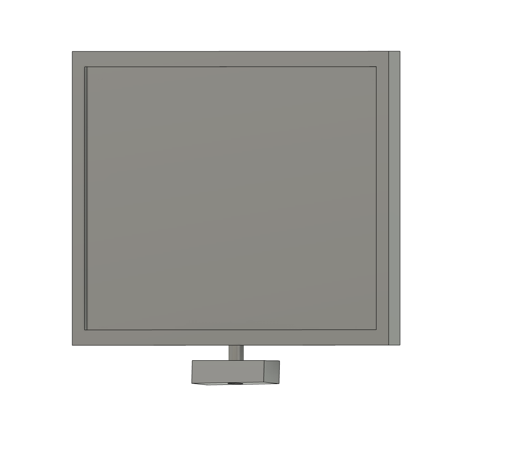

For this project, I worked with Kayla DiBenedetto to assemble an Open-Source, fully 3D printed prosthetic hand. The goal of this project was to undertand how open-source models can be used and modified to create one of a kind item to fit someones specific needs.
The first step of this project was to read through the provided instruction manual to figure out how many of each part were needed for assembly. In reading through the guide, I found the total number of pieces to be the following: 
 We mainly used the video to get our parts organized and to identify each piece after printing, after we organized our parts, we moved over to the instruction manual. I found the instruction manual to have some flaws, some of the wording did not match the pictures. One example of this was when we were stringing the whippletree and the fingers. The instructions said to string the middle fingers first, but the images showed stringing the pinky and ring finger first in one of the diagrams, we stuck with the words and strung the middle fingers first. Overall, the instructions were clear enough, especially since we had the video as a backup.
The first step in the printing and assembling process was printing the parts. We each prepared our own parts according to the instructions, however we scaled them up to 150% for ease of assembly. The parts for one hand can be fully printed on 3 Prusa Mini+ build plates and when sliced with my standard settings that I have used for all prints so far, can be finished printing in as little as 10 hours if 3 machines are being used.
 Assembling the hand was a relatively simple and straightforward thing to do. Kayla and I were able to switch back and forth on who was assembling each part. The first part of assembly was getting all of the 3d printed parts together. To start, we each attached two of the fingers in the following order: long, short, short, long; and secured them with their corresponding pins.
 The next step was to form the wrist. To do this, we used a heat gun and a form (printed by a former TA of the class) to bend the wrist cuff into its curved shape. This was needed because the wrist cuff prints flat due to the nature of how the machines build objects. After the cuff was formed, we were able to use the wrist pins and the wrist pin caps to secure the cuff in place.
The last step that we needed to complete before the fingers could articulate was to string them. We started with the middle two fingers as the instructions said, using two separate pieces of string. To do this, we passed the fishing line through the holes in the palm and down to the ends of the fingers, where there was a printed bar for us to tie the strings around.
After securing the middle two strings, we passed the loose ends through the whippletree (string holder) and the gripper box (wrist mounted whippletree holder) and secured the strings to the other fingers. We did the same with the thumb and made sure to tension all strings according to the instructions.
The final step was to install the demo bar. This is a bar that goes across the palm that allows users with full hand dexterity to test and control the hand by flexing their wrist. After the bar was installed, we were able to test the hand, and overall, I was very happy with the outcome.
  The last step of this project was to create an addon for the hand that was not present in the original model. We decided to create a hand-mounted mirror that would be able to screw in place and fold up and down to be flat with the hand. Our reasoning behind this was because users without a hand would not be able to hold a mirror on the go and fix their hair or makeup at the same time. Our idea allows them to hold out their hand and flip up the mirror and change their appearance however they want with their other hand. This idea fits into designing for inclusivity in a similar way to the “What Can A Body Do?” reading. In this reading, a disabled professor has their class design a folding podium that can be used for little people that are shorter than the average person. This new design of a standard object can be compared directly to our design of a new design (an attached mirror) of a standard object.